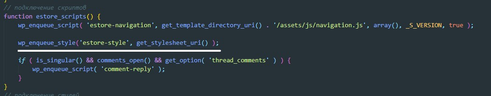
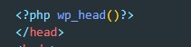
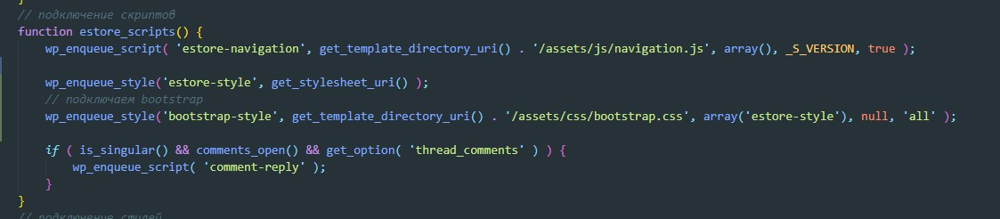
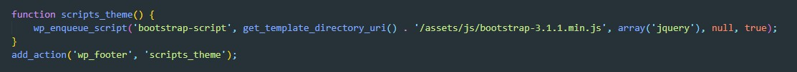
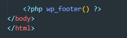

1 Копируем верстку в файл index.php
2 Из верстки берем все файлы со стилями и переносим в папку assets/css
Точно так же поступаем с файлами шрифтов, скриптов и картинок (папки fonts, js и img в assets )
Так же в нашей верстке был базовый файл со стилями style.css. Содержимое этого файла необходимо скопировать в файл style.css который находится в корне темы (это тот самый файл со стилями в котором мы прописывали коментарии для того что бы WP увидел нашу собственную тему).
После того как перенесли код CSS проверяем что бы не было ошибок в файле. Ошибки могут быть вызваны тем что для background были указаны относительные пути для картинок. Ищем такие случаи и правим (указываем текущий путь до картинок)
Что бы стили заработали нам нужно 1 - в файлe enqueue-script-style.php (он находится тема/includes/enqueue-script-style.php) функции estore_scripts добавить вот такую строчку:
Далее в index.php перед закрывающимся тегом head мы добавляем хук wp_head
После этого стили должны примениться
3 Далее подключаем остальные стили с помощью wp_enqueue_style. В файле enqueue-script-style.php в той же функции estore_scripts добавляем вот такие строчки:
Таким образом нам нужно подключить все имеющиеся стили
4 Подключаем скрипты. Скрипты подключается аналогично. Создаем функцию scripts_theme в том же файле enqueue-script-style.php добавляем вот такой код:
Далее в верстке перед закрывающися тегом body вставляем вот такую строчку
Аналогичным образом подключаем все скрипты